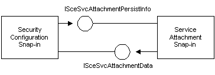

An attachment snap-in extension is the component of an attachment that displays the service-specific user interface. The snap-in extension is hosted by the Security Configuration snap-ins. The communication between the attachment extension and its snap-in host is handled by the standard MMC mechanisms described in the Microsoft Management Console documentation.
In addition to the interfaces that the snap-in extension must support in order to be an MMC snap-in extension, an attachment snap-in extension must also support the COM interface, ISceSvcAttachmentPersistInfo. This interface implements methods that indicate whether there is service-specific data that should be saved to the security database, and if so, retrieve and save this new data. The Security Configuration snap-ins call methods of this interface regularly in order to update the security database.
The Security Configuration snap-ins implement an interface, ISceSvcAttachmentData, that provides methods to retrieve service-specific data from the security database. Attachment snap-in extensions can call methods of this interface to retrieve data from the security database.
This architecture is illustrated in the following diagram.

When you create an attachment snap-in extension, you must install it and register it with the Security Configuration snap-ins. You do this by adding keys to the registry, as explained in Registering an Attachment Snap-in Extension. When a Security Configuration snap-in starts, it checks the registry and loads any registered snap-in extensions. The extensions appear as nodes under the security area for each service in the Security Configuration snap-in.
[!Note] An attachment snap-in extension can only extend Services nodes. The Services node is the MMC snap-in that contains tools to administer services installed on the system. The attachment snap-in extension declares itself as being a subordinate to a specific Services node type, and then for each occurrence of that Services node type, the MMC console automatically adds the related snap-in extensions.
Each attachment snap-in extension owns one scope pane node and the related result pane in MMC.
Â
Â
Â